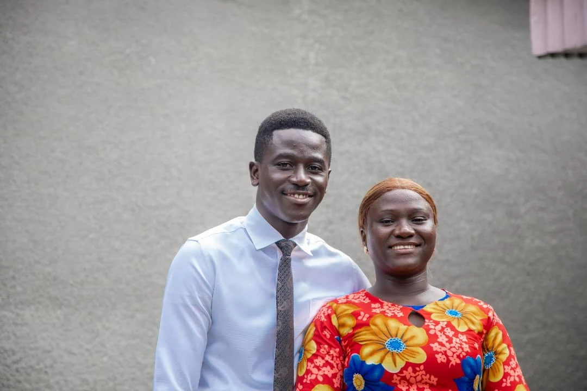

Fernandez Koubatika | WDD 130
Hello! My name is Fernandez KOUBATIKA from Brazzaville. Strategic Sales Leader and Digital Sales Coach with 3+ years driving results through online platforms and leading freelance teams. Specialized in Facebook Marketplace and WhatsApp Business, with a proven track record of training over 500 agents and optimizing digital workflows to boost performance by over 30%. Currently advancing technical skills through Software Development studies at BYU Pathway Idaho. I'm Married and I actively serve in my faith through various leadership callings in The Church of Jesus Christ of Latter-day Saints. My mission and continued church service have strengthened my ability to lead with purpose, empathy, and humility.